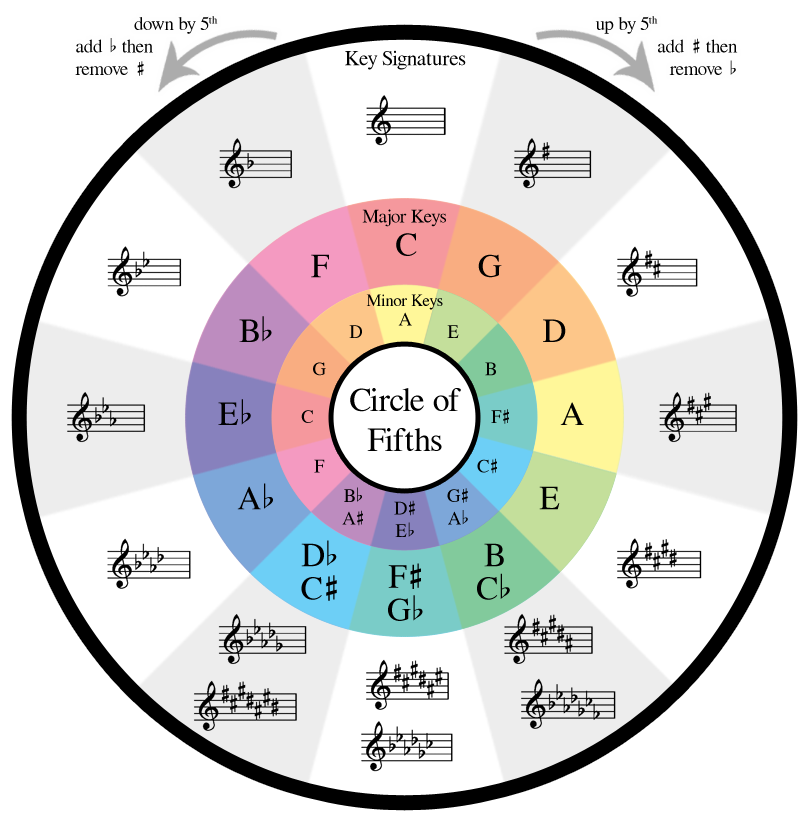

Scale Generator
Circle of Fifths
Metronome
Scale Generator
Scale:
Ionian (Major Scale)
Dorian
Phrygian
Lydian
Mixolydian
Aeolian (Minor Scale)
Locrian
Major Pentatonic
Minor Pentatonic
Blues
Hirajoshi
Kumoi
Japanese Insen
Major Bebop
Minor Bebop
Bebop Dominant
Bebop Locrian ♮2
Bebop Dorian
Whole Tone
Augmented
Diminished
Harmonic Minor
Melodic Minor
Harmonic Major
Hungarian Minor
Hungarian Major
Neapolitan Minor
Neapolitan Major
Enigmatic Minor
Enigmatic
Composite II
Ionian ♭5
Locrian ♮7
Persian
Hindu
Pelog
Dominant Sus
8-Tone Spanish
Key:
A
A# / Bb
B
C
C# / Db
D
D# / Eb
E
F
F# / Gb
G
G# / Ab
Generate Scale
Circle of Fifths

Metronome
Tempo (BPM):
Start
Stop